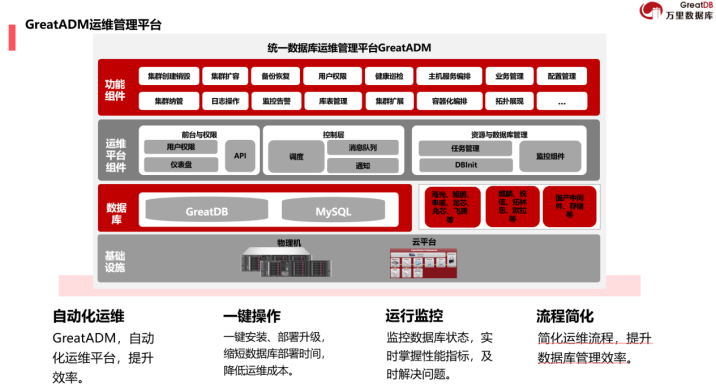

技术 | 实战演练显实力！万里数据库技术团队通过中国移动运维技能竞赛晋级
近期，在中国移动“赋能建功”2025年数智化领域运维技能竞赛——SRE运维能力竞赛中，万里数据库技术服务团队凭借出色的故障应急与运维实战能力，成功通过初赛选拔，展现了团队深厚的技术积淀与优秀的项目运维管理实力。
01 初赛表现亮眼 彰显优秀技术能力
01 赛事规格高，实战考核严
本次竞赛由中国移动集团工会与数智化部联合主办，旨在贯彻总体国家安全观，提升全网IT系统运维保障水平。竞赛采用团体赛制，下设SRE运维能力与AI+运维应用两大板块，全面考核参赛团队在运维基础、故障应急处置及智能运维应用等方面的综合能力。
02 初赛表现亮眼 彰显优秀能力
在初赛的“故障应急实战比武”环节，GreatDB团队面对专家组随机抽取的4个高难度场景挑战（含3个指定场景与1个自选场景），沉着应对，高效协作，圆满完成了各项应急处置任务。其突出表现主要体现在：
场景准备充分：团队提前精心准备了超过5个涵盖中间层异常、数据库层异常、容灾切换等关键领域的典型演练场景，体现了对运维全链路风险的深刻理解；
智能运维深度应用：在故障感知、定位、决策到处置的全流程中，团队深度融合自动化与智能化工具，极大提升了应急响应的速度与精准度；
协同流程规范高效：团队成员分工明确、沟通顺畅，严格执行事件上报、决策、操作与验证的标准化流程，展现了成熟的团队协作与过程管控能力。
根据大赛评分标准，GreatDB团队在感知时效（故障感知＜1分钟）、定位准确性（快速精准定位根因）及处置效率（业务恢复时间远超行业平均水平）等多个维度均获得高度评价。
02 强大工具支撑 GreatADM运维管理平台
技术团队优异成绩的背后，离不开万里数据库公司自主研发的GreatADM运维管理平台的强力支撑。作为GreatDB安全数据库产品生态的重要组成部分，该平台是企业级数据库统一运维的智能化解决方案，通过自动化、标准化与智能化的设计，为数据库的高可用、高性能与安全稳定运行提供了坚实基础。

GreatADM运维管理平台
GreatADM的核心优势在于：
全生命周期管理：支持数据库集群的一键部署、扩容、备份恢复等，极大简化管理；
智能监控与自动化运维：提供实时性能监控、健康巡检及告警联动，实现事前预警、事中快速处置；
全面国产化适配：深度兼容主流国产芯片、操作系统及基础设施，有力支持信创生态建设；
企业级安全与扩展性：具备细粒度权限管理与操作审计，并支持从单机到分布式集群的平滑扩展。
正是凭借万里数据库运维管理平台GreatADM在自动化处置、智能分析等方面的强大能力，万里数据库技术服务团队才能在竞赛中高效、精准地完成故障应急任务，展现出领先的运维工程化水平。
☆ END ☆
以赛促研，持续精进
成功晋级初赛，是对万里数据库技术服务团队运维实践能力的一次重要检验与肯定。公司技术团队将继续优化演练方案，深化AI技术在智能运维场景中的应用，全力备战后续决赛，并与业内顶尖团队交流切磋，持续精进。
关于万里安全数据库GreatDB
万里安全数据库GreatDB是一款支持集中式与分布式部署的高性能、高可用事务型数据库，已广泛应用于金融、电信、政务等对数据安全与稳定性要求极高的行业。其具备强大的容灾能力、自动化运维特性及全面的信创生态适配能力，是企业核心系统数据库国产化替代与升级的可靠选择。